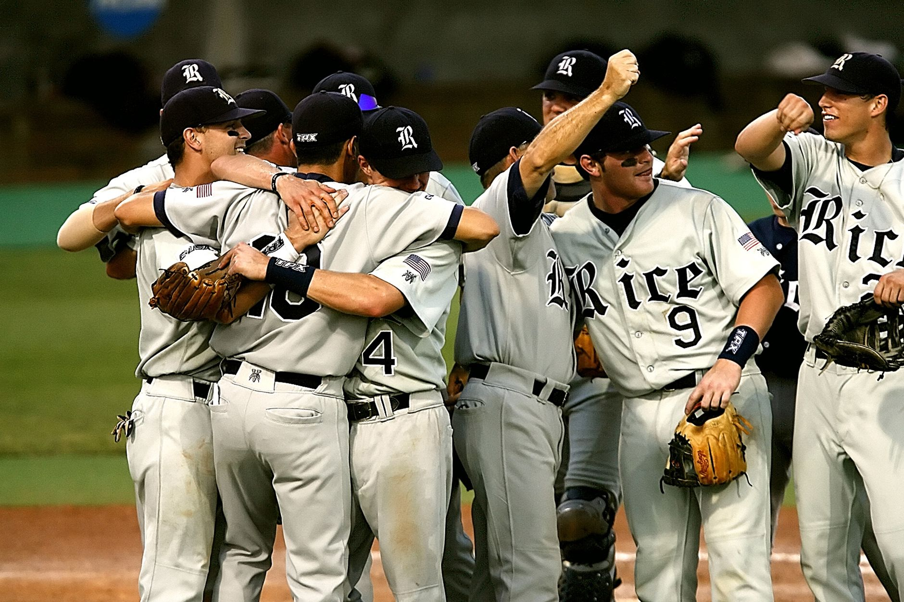

A dramatic finish at the ballpark
The atmosphere at the stadium was electric as the bottom of the ninth inning approached. The Tampa Bay Rays entered the frame trailing by a single run, facing the daunting prospect of a series deficit that seemed nearly impossible to overcome. Every fan in attendance held their breath as the tension reached a fever pitch, knowing that one swing of the bat could change the course of baseball history.
The rally began with a gritty approach at the plate. Instead of swinging wildly at difficult pitches, the Rays displayed the disciplined hitting that has become their trademark throughout this postseason run. A series of clutch hits moved the runners into scoring position, setting the stage for a moment that will be remembered for decades to come.
When the final contact was made, the sound of the ball hitting the bat echoed through the stands. As the winning run crossed home plate, the dugout emptied in a chaotic celebration of joy and relief. This walk-off victory does more than just add a win to the column; it provides the psychological momentum necessary to face an elimination game.
Key turning points in the game
While the final hit grabbed the headlines, the game was actually won in the middle innings through stellar defensive plays and efficient pitching. The Rays' starting rotation managed to navigate through high-pressure situations, preventing the opposing team from breaking the game open early on.
These small victories on the field prevented the opposition from building a lead that would have been insurmountable. By keeping the score close, the Rays ensured that they would have a chance to strike when the pressure was at its highest in the closing moments of the game.
The mindset of a championship team
We knew we couldn't let this season end like this. We told ourselves in the dugout that we had one more day of baseball left in us, and we played like it.
This quote from the Rays' clubhouse captures the essence of their current campaign. There is a sense of defiance in the way this team operates. They are often viewed as underdogs, but their ability to thrive in hostile environments and high-pressure moments makes them a dangerous opponent for any championship contender.
The mental toughness required to bounce back from a potential series loss cannot be overstated. Coaches and players alike have emphasized the importance of short-term memory—forgetting the previous losses and focusing entirely on the immediate task at hand. This singular focus is what allowed them to execute so cleanly during the ninth inning.
Looking ahead to game five
The series now shifts to a winner-take-all scenario for the upcoming game. For the Rays, the objective is clear: maintain the momentum from this walk-off win and exploit any fatigue in the opposing pitching staff. The energy from this victory will undoubtedly carry over into the clubhouse as they prepare for the next showdown.
Analysts are pointing to several factors that will determine the outcome of Game 5. The availability of the bullpen will be crucial, as well as the ability of the middle order to drive in runs consistently. It is no longer about just surviving; it is about dominating the diamond to secure the title.
The broader impact on the league
This World Series matchup has provided incredible entertainment for baseball fans across the globe. The high level of play and the dramatic shifts in momentum serve as a reminder of why baseball remains a cornerstone of professional sports. Every inning has been a masterclass in strategy and execution.
As we watch these two powerhouses battle it out, we are reminded of how close other teams have come to glory. For instance, fans recently watched the intense pursuit of victory in the series where the Brewers One Win Away From Historic World Series Title was the primary focus. Much like that historic chase, the Rays are now on the precipice of greatness.
Whether the Rays can complete this incredible comeback or if the opposition will close the door remains to be seen. One thing is certain: the eyes of the sporting world are fixed on this series, waiting to see which team will ultimately hoist the trophy and cement their legacy in the history books.
See Also
If you enjoyed this Baseball News article, check out Brewers One Win Away From Historic World Series Title for more useful reading.